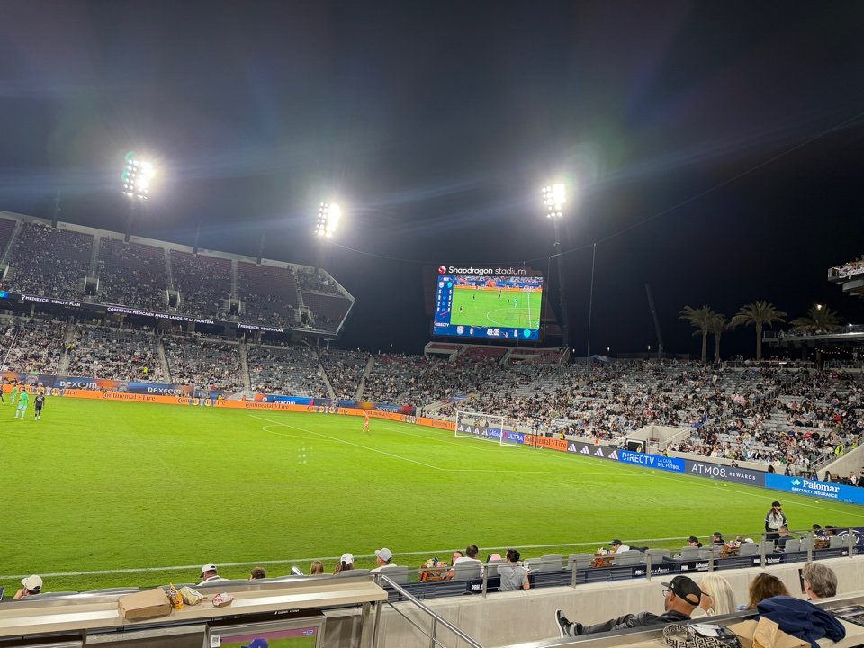
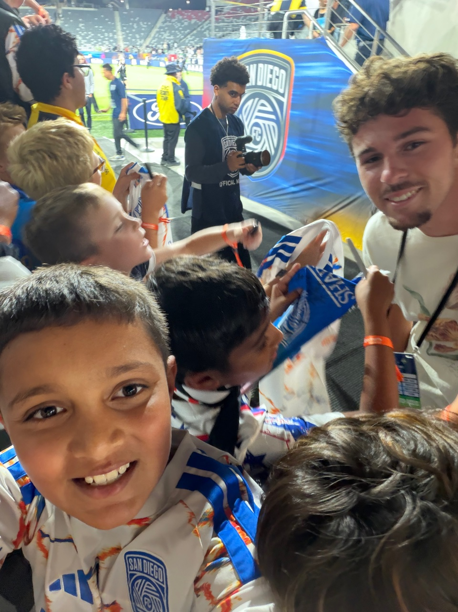
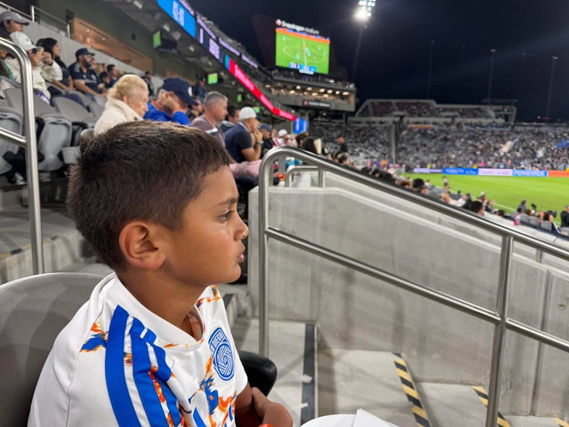
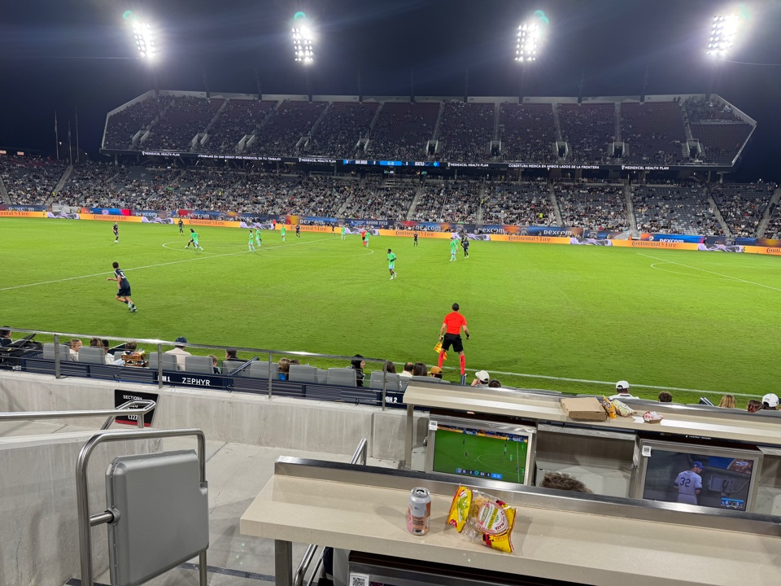
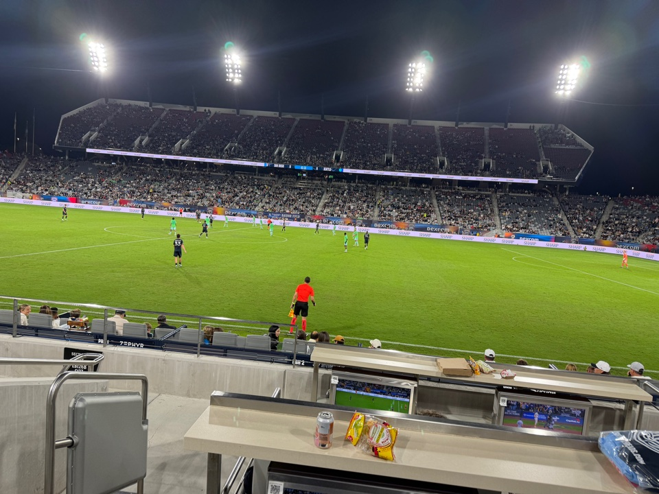

Two Down, Not Done: Watching SDFC Snatch a 2–2 From Seattle

I walked into Snapdragon Stadium on Saturday night with my son, a signed team poster in his hands — the Fan Appreciation Night giveaway for the first 20,000 fans — and the same feeling I have carried to this stadium for weeks: hope, with a knot in it. San Diego FC had not won in eight games. The playoffs were slipping. And for a long stretch of the night, it looked like the story would end the way it has ended so many times this season.
Then, in the final minutes, the whole stadium found its voice again.
The night started with the kids
Before I get to the goals, I have to start where the night started for us: the tunnel. While the match went on, players came by to sign the giveaway posters for the kids gathered at the rail — my son among them, poster in hand, grinning ear to ear. That is the part of Fan Appreciation Night that does not show up in a match report. For a young fan, a signed poster and a few seconds with a player is the whole season. The football would test our patience later. This part was pure joy.


Two goals, and the air went out of the stadium
The first half ended scoreless, and honestly, it felt like a game SDFC could win. Then Seattle struck twice in five minutes after the break, and you could feel the stadium deflate row by row. Dejan Joveljic opened the scoring in the 50th minute. In the 55th, Gomez doubled the lead. 2–0 down, at home, on a night meant to celebrate the fans — I looked around and saw the same expression everywhere: here we go again.
I will be honest: I had the thought. The winless run reaching nine games, the playoff line drifting further away, another night where the effort was there and the result was not. My son, though, never stopped watching. Kids do not do the math. They just believe the next goal is coming. On this night, the kid was right.
Bakambu, twice — and Snapdragon erupted
The comeback started in the 60th minute, and it started with a miss. Anders Dreyer stepped up to a penalty, the goalkeeper saved it, and Cédric Bakambu was first to the rebound. 2–1. The noise came back like someone had flipped a switch — suddenly the drums, the chanting, the whole south end was alive again.
From there it was all San Diego, wave after wave, and the clock became the enemy. Deep into stoppage time, SDFC got one more penalty — and this time Bakambu took it himself and buried it. 2–2. I am not embarrassed to say I was on my feet yelling with thousands of strangers, and my son was yelling louder than me.

What the draw really means
A point, not a rescue. Let us not pretend. The draw leaves SDFC at 8–12–11, 35 points, 12th in the West, winless in nine, four points below the playoff line with three games left. The ceiling is 44 points, and getting there means winning all three: at Vancouver on Wednesday, at home to St. Louis on Saturday, and at Sporting Kansas City on Decision Day — plus help from Colorado and the Galaxy dropping points, plus winning tiebreakers SDFC currently lose on just eight wins. That is not a plan. That is a prayer.
But character is not nothing. This team has now come back from two goals down at home on a night when folding would have been easy. Bakambu's brace — the poacher's rebound and the ice-cold stoppage-time penalty — is the kind of individual performance that reminds you why you keep showing up. Dreyer missing a penalty and his team still finding a way back says something about the room, too.
The kids are the point. I keep coming back to the poster. My son left Snapdragon with a signed poster, a 2–2 draw that felt like a win, and a memory of a stadium roaring at the death. Seasons end. Playoff races fade. That night stays. If SDFC's first seasons are building anything, it is fans like him — the ones who will still be in those seats when the wins come.

Three games left
So here is where I land. The math says under 10%. The heart says: be there anyway. Wednesday at Vancouver, Saturday at home against St. Louis, then Decision Day in Kansas City. I watched this team refuse to lose on Saturday night when losing was the easy option. The least a fan can do is refuse to leave early.
See you at Snapdragon on Saturday.